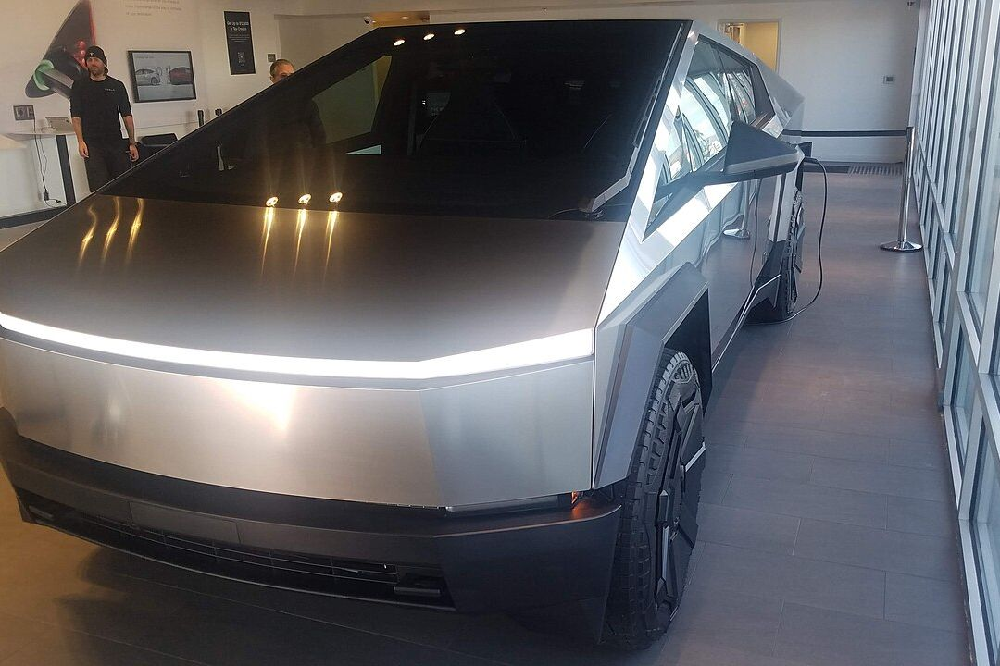
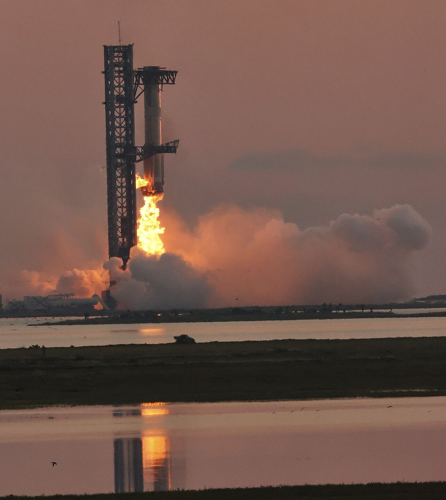
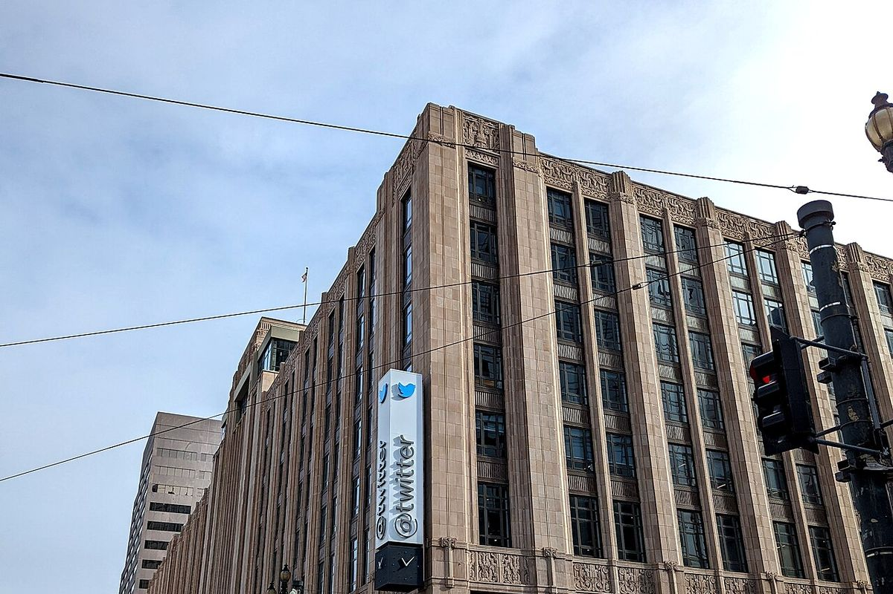

Tesla
把电动车从「政策合规品」做成人人想要的科技产品；史上首家市值破万亿的车企。
公司档案 →03 / 公司版图
六条赛道，同一套操作系统——把同一种打法在不同行业重复运行。

把电动车从「政策合规品」做成人人想要的科技产品；史上首家市值破万亿的车企。
公司档案 →
用可回收火箭把发射成本打下来；如今既运宇航员，也筹划火星。
公司档案 →
以 440 亿美元买入并更名 X——既是他的扩音器，后来也成为 AI 公司的一部分。
公司档案 →Grok 之父；2026 年 1 月完成 200 亿美元 Series E（估值约 2300 亿量级），英伟达、思科参投。
公司档案 →2016 年创立。第一批客户是瘫痪患者——用意念移动光标与设备；长期故事则是「人机共生」：在 AI 变强的年代，给人类大脑留一个接口。
档案与入口 →起因是一句堵车抱怨：地面解决不了，就从地下走。业务聚焦市政与交通隧道，卖点是持续压低每英里造价。
档案与入口 →| 交易 | 年份 | 退出与要点 |
|---|---|---|
| Zip2 → Compaq | 1999 | 约 3.07 亿美元退出 · 个人约 2200 万——第一桶金 |
| PayPal → eBay | 2002 | 15 亿美元退出 · 最大个人股东，套现约 1.75 亿 |
| SolarCity → Tesla | 2016 | 约 26 亿美元 · 关联交易并入 Tesla，当年曾受质疑 |
| OpenAI | 2015 | 联合创始人 · 2018 年退出董事会——数年后成为 xAI 最受关注的对手 |
03b / 关系总览
11 个节点、13 条关系：实线是在册证实的关系（来源逐条可查），虚线是编者归纳。点选节点看业务定位、相关事件与资料；手机与无脚本环境直接读下方清单。
在图上点选一家公司（支持 Tab + Enter）——或直接阅读下方清单；无脚本环境下列表即完整信息。
金额一律使用站内在册口径，不混用估值与收入；2025 年 xAI–X 交易见账本 e2025-03-28 与 xAI·Grok 档案。